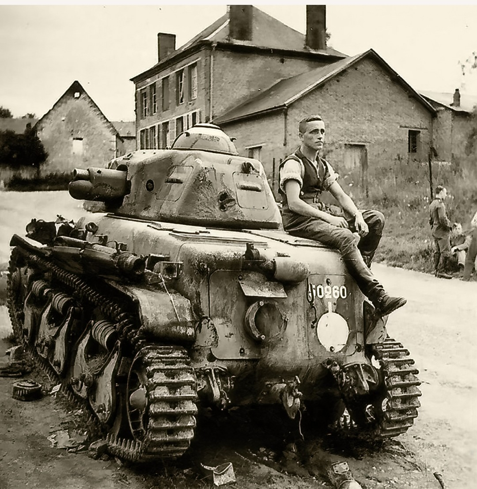

Le Renault R35 est le char léger standard de l’infanterie française à la veille de la Seconde Guerre mondiale. Compact, fortement blindé et conçu pour accompagner les fantassins, il représente l’un des blindés les plus produits par la France entre 1936 et 1940.
Constructeur : Renault
Production : 1936–1940 (≈ 1 600 exemplaires)
Équipage : 2 hommes (chef de char + pilote)
Armement : Canon SA18 de 37 mm + mitrailleuse MAC 31
Blindage : jusqu’à 40 mm
Vitesse : 20 km/h
Rôle : Appui rapproché de l’infanterie
Le R35 se distingue par son châssis arrondi, sa tourelle APX-R très compacte et ses chenilles courtes. Sa silhouette trapue et son blindage épais en font un blindé robuste, mais son canon de 37 mm reste insuffisant contre les chars allemands de 1940.

Déployé dans les bataillons de chars d’infanterie, le R35 combat en France durant la campagne de mai–juin 1940. Après l’armistice, de nombreux exemplaires sont capturés et réutilisés par l’armée allemande sous la désignation Panzerkampfwagen 35R 731(f).
Symbole des blindés français de 1940, le Renault R35 est une pièce incontournable pour comprendre la doctrine d’appui de l’infanterie et l’évolution des chars légers avant la Seconde Guerre mondiale.